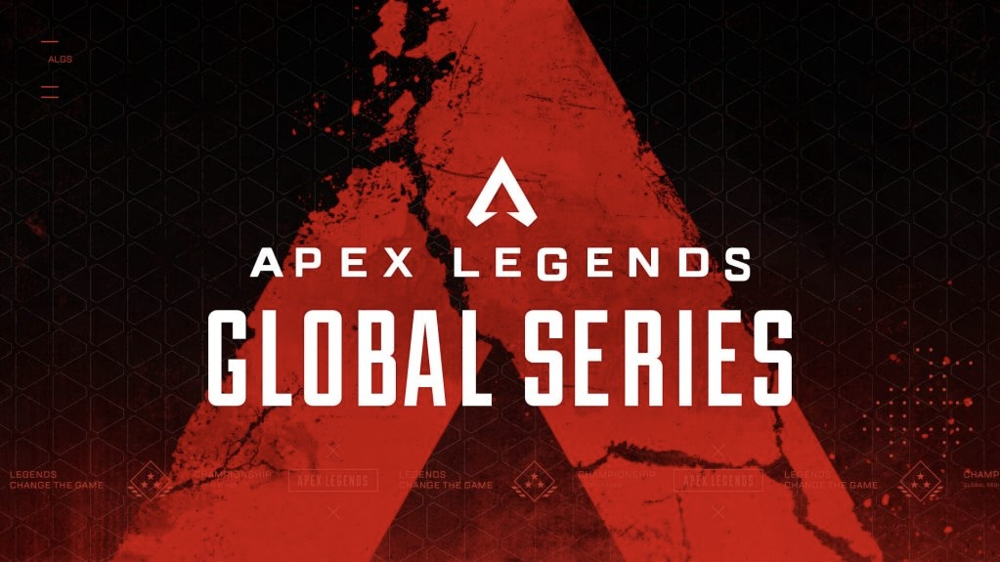

Respawn Entertainment. (2019). *Apex Legends Concept Art*. Hentet fra EA
{kind=link}
Apex Legends er et spill utviklet av Respawn Entertainment. Det ble lansert i 2019 og har siden den gang tatt E-sport verdenen med storm. Spillets unike blanding av intens action og lagstrateti har fanget interessen til spillere over hele verden. På denne Aktivitet-siden skal vi se nærmere på E-sport og utforske hvordan Apex Legends har bidratt til å forme den. Her kan du se alle spillkarakterne til Apex Legends.
Om Apex Legends
Respawn Entertainment. (2019). *Apex Legends Concept Art*. Hentet fra EA
{kind=link}
Apex Legends er et gratis førstepersons skytespill utviklet av Respawn Entertainment. Spillet ble lansert i 2019 og har raskt blitt populært innen gaming-miljøet. Med et unikt karakterbasert system, tilbyr det spillerne muligheten til å velge fra en rekke legender, hver med sine egne spesielle evner og ferdigheter. Dette gir dybde til gameplayet og oppmuntrer til samarbeid mellom spillere i lagspillmodus. Les mer om spillet her.
Om Esports

Red Bull. (2024). *E-Sport Hub*. Hentet fra Red Bull
E-sport, eller elektronisk sport, refererer til konkurransedyktig spilling, der spillere eller lag konkurrerer mot hverandre i videospill. E-sport har vokst betydelig i popularitet de siste årene, med store turneringer, profesjonelle spillere og betydelige pengepremier. Spillet Apex Legends har også gjort seg bemerket i E-sport-verdenen, med et voksende antall turneringer og ligaer som tiltrekker seg både spillere og tilskuere. Se denne videoen her for å lære mer om E-sport.
Toppturneringer 
EA. (2024). *Apex Legends Toppturneringer*. Hentet fra EA
Toppturneringer i Apex Legends gir en plattform for de beste spillerne og lagene til å konkurrere om heder og premiepotter. Disse arrangementene tiltrekker seg millioner av seere og gir et spennende innblikk i det høyeste nivået av konkurransespill. Turneringene fremmer også fellesskapet og engasjementet blant fansen, som samles for å støtte sine favorittspillere. Les mer om Global Series her.
Toppspillere

Red Bull. (2024). *Toppspillere*. Hentet fra Red Bull
Toppspillere i Apex Legends har oppnådd berømmelse og suksess gjennom sitt imponerende spillferdigheter og strategiske tenkning. Mange av disse spillerne kommer fra ulike bakgrunner og har en reise som ofte involverer timer med trening og konkurranse. Med økende oppmerksomhet på E-sport, er toppspillere blitt ikoner innen gaming-verdenen, som inspirerer nye spillere til å forfølge sine egne mål i sporten. Akkurat som Apex Legends har toppspillere, har også populære spill som League of Legends sine stjerner. Les mer om de beste League of Legends-spillerne her.
Maps i Apex Legends
EA. (2024). *Kart i Apex Legends*. Hentet fra EA
Kartene i Apex Legends er utformet for å tilby en variert og dynamisk spillopplevelse. Hvert kart har sine egne unike trekk, inkludert ulike landskap, bygninger og områder for dekning. Strategisk forståelse av kartene er avgjørende for å mestre spillet, ettersom spillere må bruke terrenget til sin fordel. Med kontinuerlige oppdateringer og nye kartinnføringer holder Apex Legends seg friskt og spennende for både nye og erfarne spillere. Det finnes flere forskjellige kart som Kings Canyon fra spillet. Sjekk ut de andre her.